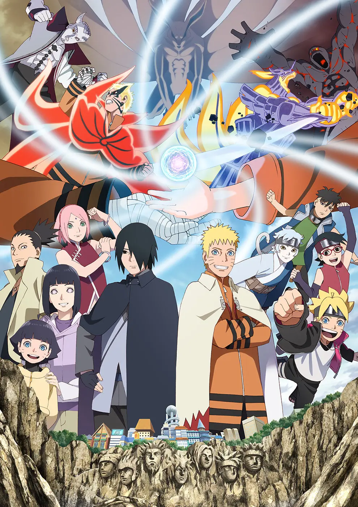

Naruto 20th Anniversary Specials — Rumors, Potential Stories & Why It Matters
To celebrate 20 years of one of the world’s most beloved shonen series, rumors point to four short anniversary episodes, possibly arriving late 2026. These specials would likely focus on character moments, unfinished threads, and fan-favorite callbacks.
What the rumors say
Reports indicate a small set of short-form episodes rather than a full arc — ideal for nostalgia, quick canon clarifications, and to spotlight characters who were briefly sidelined.
Potential episode themes
- Short focusing on Sasuke’s travels and reflections
- A slice-of-life with Sakura and the next-generation team
- Revisiting a classic battle from a new perspective
- A heartfelt chapter exploring Naruto’s legacy
Production clues
Studio anniversaries usually involve a marketing push: new key visuals, music releases, and limited-run specials. Keep an eye on official SONY/TV Tokyo announcements for confirmation.
Why fans care
Naruto’s cultural reach is massive — short, high-quality anniversary episodes both reward long-time fans and create accessible entry points for new viewers.
Final thoughts
Treat rumors with caution, but be ready: if these shorts arrive late 2026, they will dominate fan conversation, streaming trends, and anniversary merchandising.